结论：向下创 60 日新低、止跌条件一条未满足，低仓位等日线有力度底分型，总仓 ≤4 成、不追涨。 上证收 3476.47（-2.03%），最低 3468.65 创新低、收盘低于 MA5 3535.04 共 58.57 点；略跌穿 11/23 左低点 3476.65（仅 7.99 点）。创业板指 -4.19% 收 2183.58 同为新低，上证50 仅 -0.82%。温度 20 度、一/二类热点全无，池内 9 只全部无方法买点。
① 「走势向下创出新低」 —— 上证收 3476.47（-2.03%）、最低 3468.65 为 60 日新低；深成 -3.24% 收 10086.36、创业板 -4.19% 收 2183.58 同为 60 日新低 ✓
② 「略微跌穿左边低点，不属于有效击穿」 —— 左低点为 11/23 的 3476.65，今日最低 3468.65 仅跌穿 7.99 点（0.23%）✓
③ 「依旧无法判断见底止跌，等日线有力度底分型」 —— 收盘低于 MA5 3535.04 共 58.57 点，止跌三要件第 2 条即不满足；日线有力度底分型按老师口径引用 ✓
④ 明日两条路径 —— 直接回拉：需 15 分钟突破左高点 3585.22（距收盘 108.75 点）后出底分型回抽确认三买，处理不要太快；继续向下：走出距离后辅助日线有力度底分型。动作：不追涨、控频率，总仓 ≤4 成。
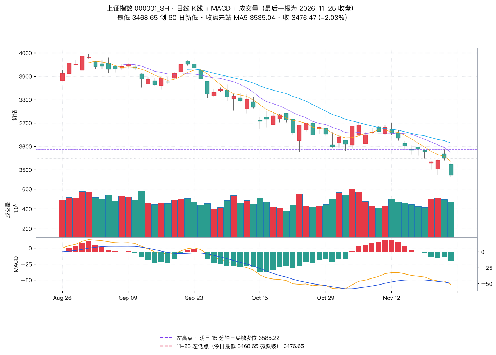
上证指数：收 3476.47，最低 3468.65 创 60 日新低，略跌穿左低点 3476.65
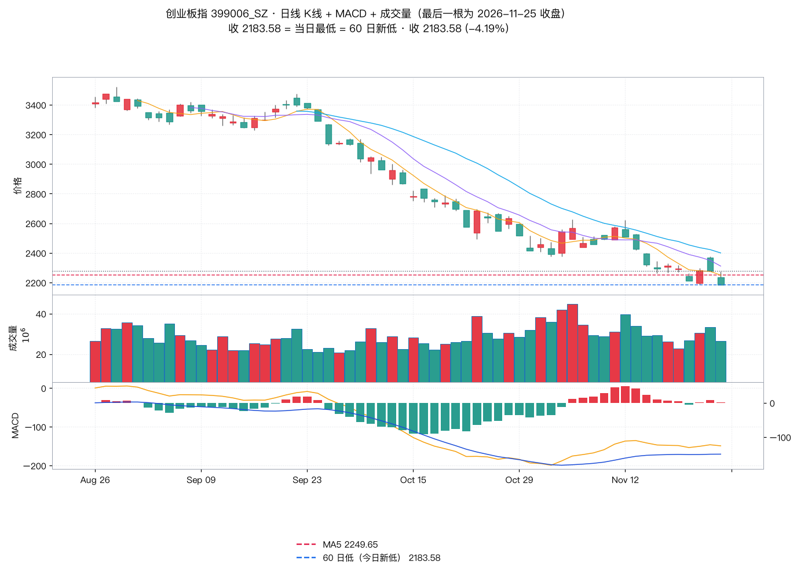
创业板指：收 2183.58（-4.19%），收在当日最低 = 60 日新低
| 老师口径（11-25 收评） | 实测 | 判定 |
|---|---|---|
| 「人形机器人补跌，部分个股依旧活跃，也有大力度调整」 | 机器人篮子 -7.73%、0 涨 9 跌；汇川 -2.57% 相对抗跌，北特 -10.00%、模塑 -9.73% 大幅调整 | 口径差异 |
| 「文化传媒板块也出现调整」 | AI视频/传媒 -5.57%（0 涨 7 跌）、申万传媒 -2.86%、游戏 -3.35%，上海电影跌停 | 一致 |
| 「北方华创跌破支撑，向下延续出补跌，尚未止跌」 | 北方华创 -9.55% 收 495.00，MA5 550.87 未收复；国产算力篮子 -3.81%，半导体 -5.99% | 一致 |
| 「江丰电子，华虹宏力都出现补跌迹象」 | 江丰电子 -11.70%；华虹公司（华虹宏力）-13.89%，均收在 MA5 之下 | 一致 |
| 「涨幅榜靠前的主要是高股息方向，比如旅游酒店，中药，零售和银行」 | 超市 +2.07%、百货 +1.84%、国有大行 +0.71%、酒店餐饮 +0.61%、中药 +0.47% 在榜前段；榜首是水产养殖 +5.57%、文化用品 +3.65% | 口径差异 |
| 「银行板块走势拉回后，不是很强，不要去追买」 | 东财银行 -0.02%、自建篮子 +0.42%（兴业 +1.39%、招行 -0.74%），近平盘但强于上证 | 一致 |
判定词：一致 / 口径差异
① 「温度 20 度，一类热点无、二类热点无」（老师口径）：涨跌比 0.12:1，跌超 5% 1865 只（占 33.5%）、跌停 43、炸板 30，昨涨停 55 只今日跌 35 只 → 短线生态很差 ✓
② 补跌是今日主线：半导体 -5.99%、华为概念 -4.61%、机器人 -7.73%，高股息红利 +0.49%、煤炭石油 +0.47% 逆势。
③ 尚无新热点酝酿：涨停 51 只集中在化学制药 8、一般零售 4、中药 3；ETF 份额全线下降（创业板ETF -0.84%）→ 无增量承接。动作：涨幅榜方向也不追涨，等回调止跌。
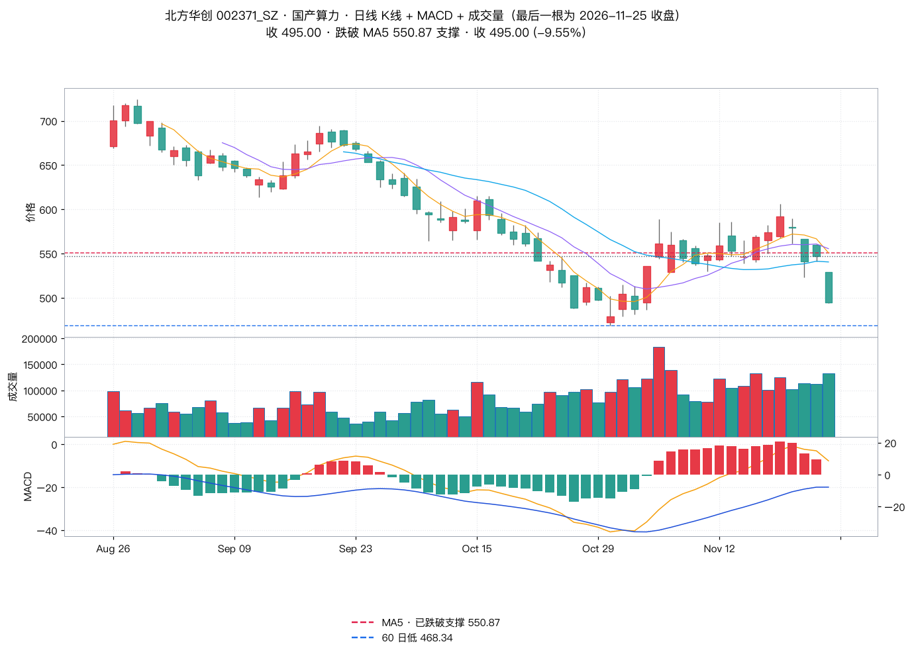
北方华创（国产算力）：收 495.00（-9.55%），已跌破 MA5 550.87 支撑
| 标的 | 收盘 | 老师定性 | 关键位 / 触发条件 | 实测印证 | 动作 |
|---|---|---|---|---|---|
| 康龙化成 300759 大医药 | 39.92 -3.13% | 中线 · 无买点 | 支撑 37.51 / 压力 43.58，突破后回抽三买 | 最低 39.74 未破支撑（差 2.23 元），收盘低于 MA5 | 等 |
| 瑞芯微 603893 端侧AI | 193.69 -6.65% | 中线 · 无买点 | 观察 2-3 天，等内部横盘 | 最低 193.57 破 MA5 195.59，收盘亦在下 | 等 |
| 海天瑞声 688787 机器人 | 97.61 -6.52% | 中线 · 无买点 | 突破压力 111.22 后三买 | 最高 106.08 未触压力（差 5.14 元） | 等 |
| 中国船舶 600150 船舶 | 34.92 -1.19% | 中线 · 无买点 | 突破 36.75 后 15 分钟底分型三买 | 最高 35.24 未触压力（差 1.51 元），收盘站上 MA5 34.75 | 等 |
| 伊利股份 600887 大消费 · 防守 | 33.58 +1.76% | 中线 · 不追涨 | 盯 31.95：跌破＝顶背驰可高抛 | 最低 32.80 未破 31.95（差 0.85 元）；最高 33.75 创 60 日新高 | 等 |
| 创业板ETF 159915 创业板宽基 | 2.199 -4.06% | 中线 · 无买点 | 突破 2.392 后三买 | 收在当日最低、创 60 日新低；量比 0.93 | 等 |
| 中芯国际 688981 国产算力 · 短线转中线 | 122.00 -3.56% | 中线 · 无买点 | 多等一根 K 线，再找日线底分型 | 收 122.00 低于 MA5 123.56，最低 120.00 | 等 |
| 兆易创新 603986 存储芯片 | 198.28 -6.69% | 短线 · 无买点 | 突破 229.50 后 15 分钟回抽确认 | 收盘＝最低＝60 日新低；最高 210.98，距 229.50 差 18.52 | 等 |
| 华丰科技 688629 华为概念 | 83.06 -13.61% | 短线 · 走势转弱 | 无买点，短线剔除跟踪 | 最低 83.00 破 MA5 90.59，池内跌幅最重 | 剔 |
「无方法买点」为老师原文口径，不改写成可试探；实测印证只写触达事实
池子变化：中芯国际短线转中线；华丰科技走势转弱、短线剔除；本期无潜在强势教学案例。
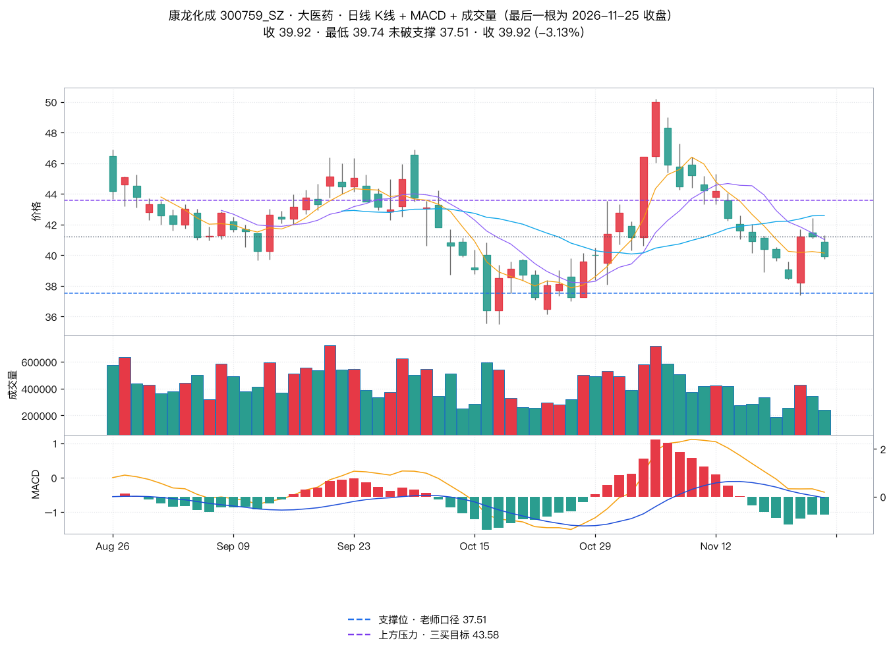
康龙化成（大医药）：收 39.92（-3.13%），支撑 37.51 未破
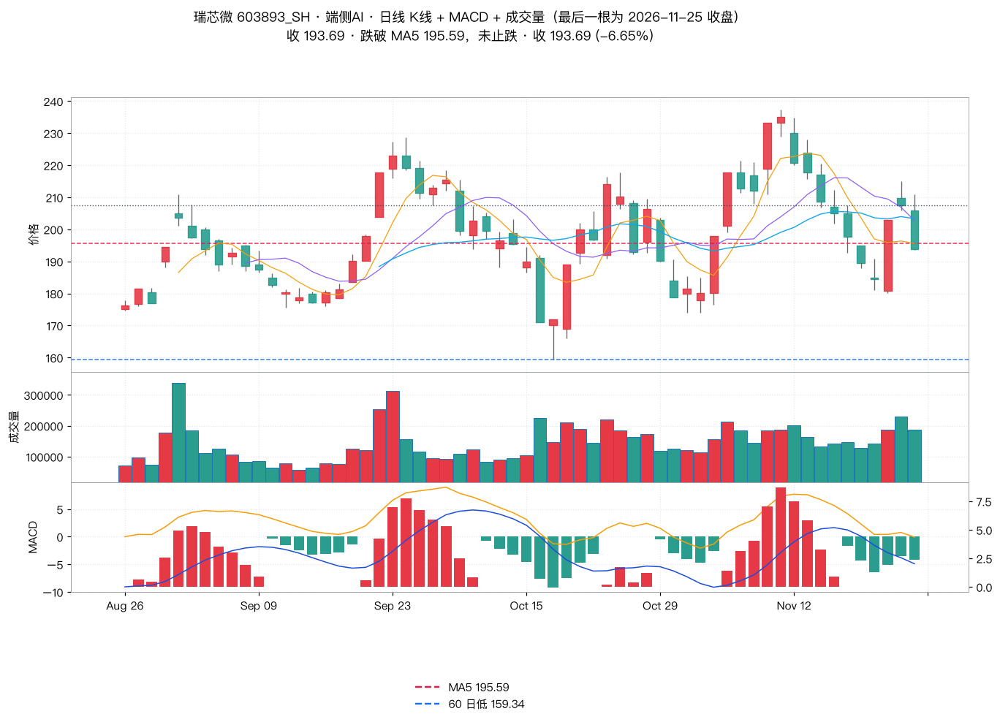
瑞芯微（端侧AI）：收 193.69（-6.65%），破 MA5 195.59
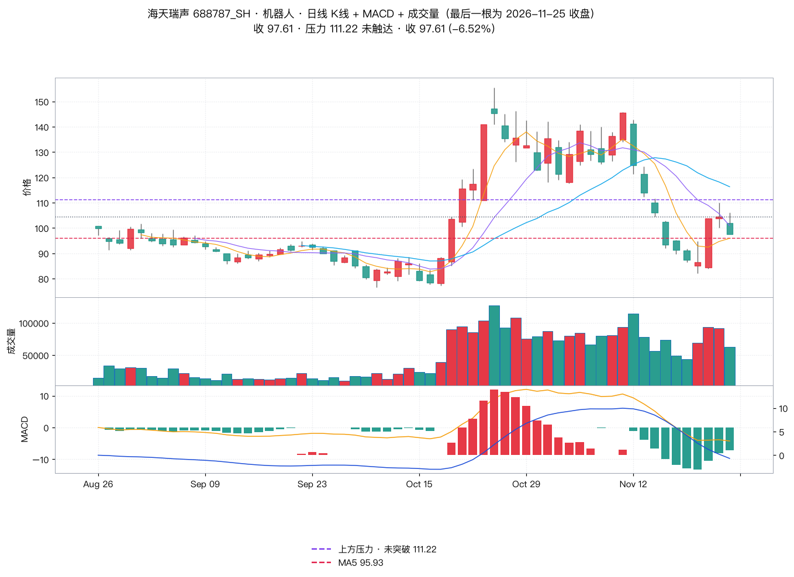
海天瑞声（机器人）：收 97.61（-6.52%），压力 111.22 未触达
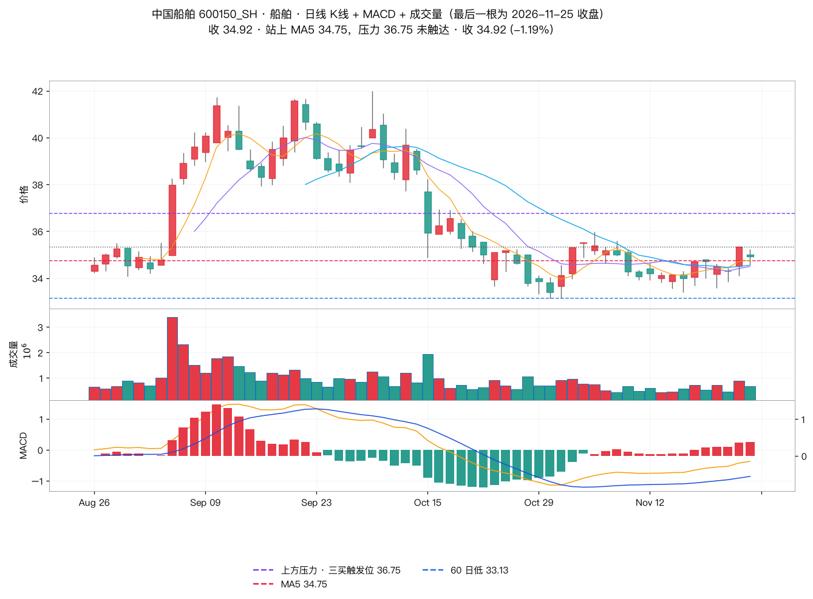
中国船舶（船舶）：收 34.92（-1.19%），压力 36.75 未触达
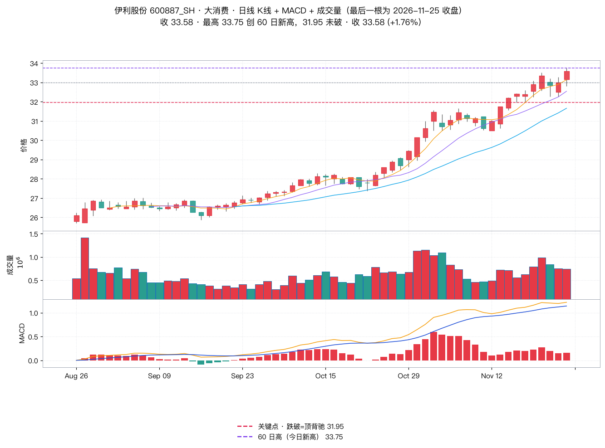
伊利股份（大消费）：收 33.58（+1.76%），最高创 60 日新高，31.95 未破
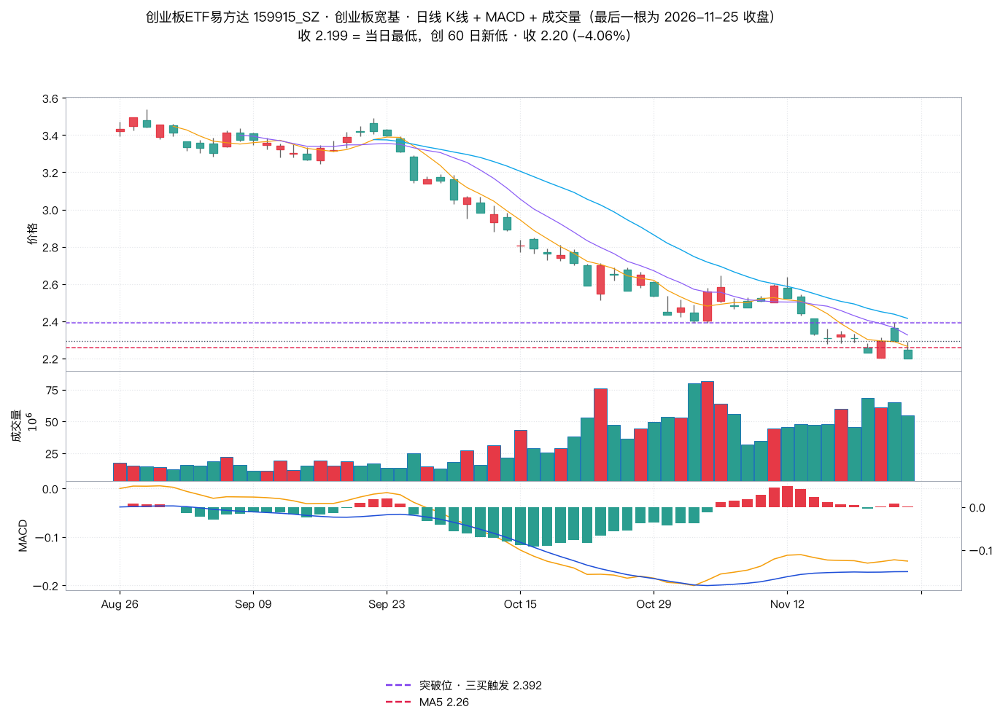
创业板ETF（创业板宽基）：收 2.199（-4.06%），当日最低＝60 日新低
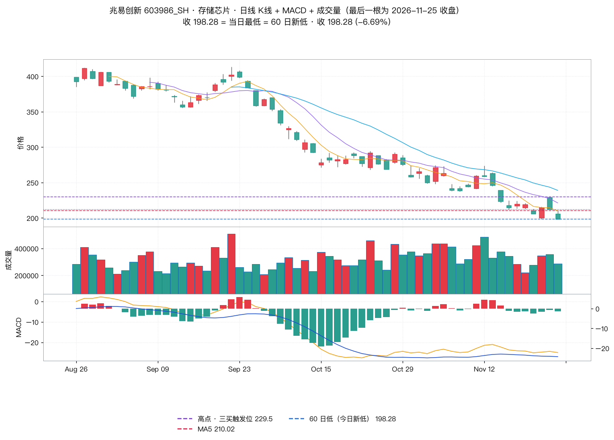
兆易创新（存储芯片）：收 198.28（-6.69%），创 60 日新低
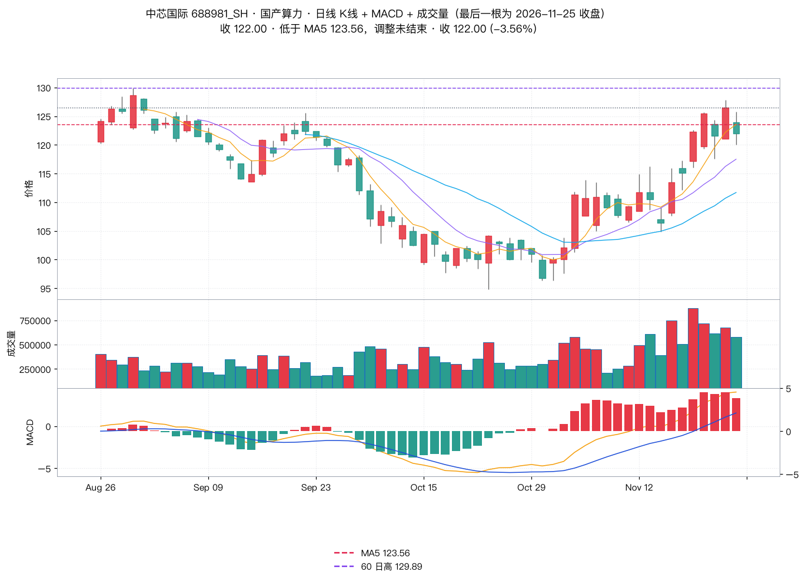
中芯国际（国产算力）：收 122.00（-3.56%），低于 MA5 123.56
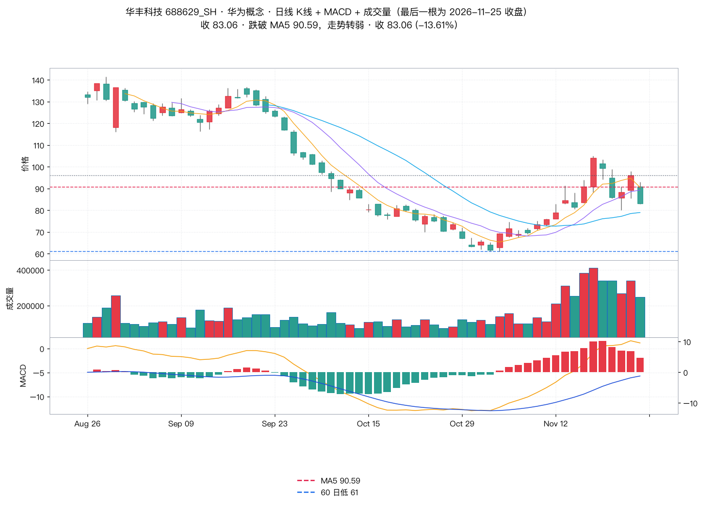
华丰科技（华为概念）：收 83.06（-13.61%），走势转弱、短线剔除
| 老师口径 | 实测 | 判定 |
|---|---|---|
| 「人形机器人…部分个股依旧活跃」 | 篮子 0 涨 9 跌全跌，「活跃」仅体现为跌幅最小（汇川 -2.57%） | 口径差异 |
| 「涨幅榜靠前的主要是高股息方向」 | 高股息四类在榜前段，但榜前三为水产养殖 +5.57%、文化用品 +3.65% | 口径差异 |
| 「中国船舶…月线结构扎实收敛」 | 近 6 个月收盘收敛在 33.39–39.10，但月线振幅 9 月 22.1%、10 月 25.1% 放大 | 部分成立 |
| 「中芯国际今日出日线顶分型，调整力度不充分」 | 顶分型属缠论结构，无法日线核验；价格收 122.00 低于 MA5 123.56 | 无法核验 |
| 池子：华丰科技「短线剔除」、中芯国际「转中线」 | 华丰科技 -13.61% 破 MA5 90.59 属实；中芯国际收盘低于 MA5，调整未结束 | 状态变化 |
判定词：口径差异 / 部分成立 / 无法核验 / 状态变化
其余判据当日一致 ✓：创新低、略跌穿左低点非有效击穿、无法判断见底止跌、北方华创跌破支撑出补跌、江丰电子与华虹宏力补跌、传媒调整、高股息居涨幅榜、银行不强、短线生态差、无新热点教学案例、9 只无方法买点、伊利未破 31.95、创业板ETF 与兆易创新未触关键位。
日线取 Tushare 前复权，MA5 / 60 日高低同源；涨跌家数、成交额取全市场快照，涨跌停用东财池；板块用自建篮子与东财行业榜。缠论定性按老师口径引用，我方未复算，不作为买点依据。
来源：都业华《高级班》2026-11-25 收评，执业编号 A0400626100004。仅供参考，不作为买卖依据，风险自担。投资有风险，入市需谨慎。